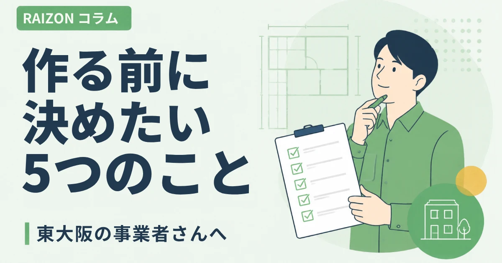
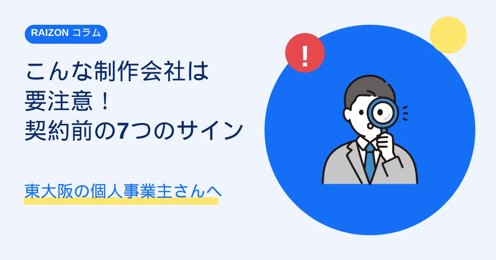
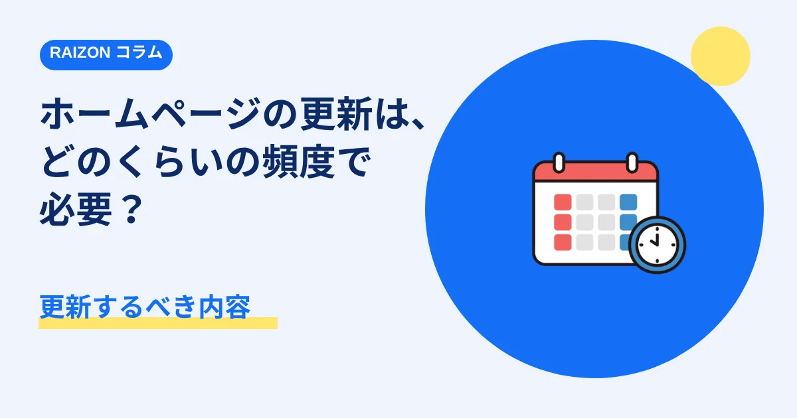
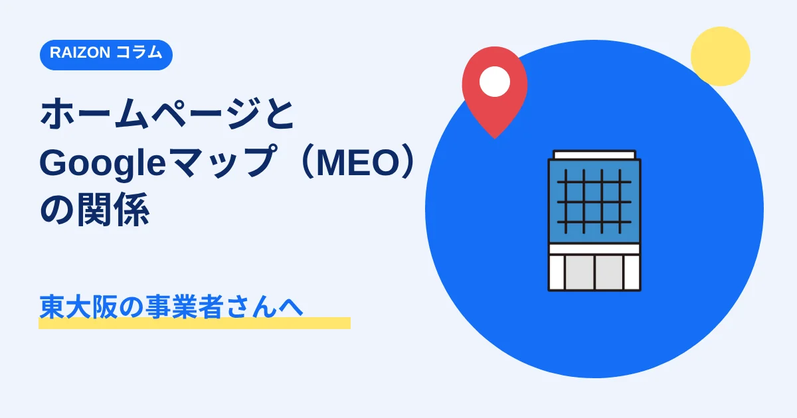

ホームページを作る前に決めておきたい5つのこと｜東大阪の事業者さんへ

東大阪や大阪府内、奈良・京都の事業者さんからも、「ホームページを作りたいけれど、何から決めればいいのかわからない」という相談は、とても多いです。実は、制作会社に相談する前に、5つのことを考えておくと、話がスムーズに進みます。難しく考える必要はありません。思いつく範囲で大丈夫です。
- 決めておきたいのは、「目的」「お客様」「載せる情報」「写真」「問い合わせの受け方」の5つ
- 完璧に決まっていなくても、制作の相談はできる
- 写真や文章の準備が苦手でも、相談しながら進められる
1. ホームページで、何をしたいか（目的）
まず、ホームページで「どうなったらうれしいか」を、ひとことで考えてみてください。
- お店や会社を知ってもらいたい
- 問い合わせや予約を増やしたい
- 名刺や紹介のときに、見せられるものがほしい
- 求人の応募を増やしたい
目的が決まると、載せる内容や、ボタンの置き方が決まります。
2. 誰に見てほしいか（お客様）
「近くに住んでいる人」「同じ業種の経営者」「ご高齢の方のご家族」など、見てほしい人を思い浮かべます。見る人が決まると、言葉づかいや、見せ方が変わります。たとえば、東大阪の近所のお客様が中心なら、場所・最寄り駅・営業時間・駐車場が、すぐわかることが大切です。「東大阪 ○○」のように、地域名で探されることも多いので、対応エリアも、わかりやすく書いておきましょう。
3. 載せたい情報
最低限、次の情報があると、ホームページとして成り立ちます。
- 事業の内容（何をしているか）
- 料金やメニューの目安
- 場所・営業時間・連絡先
- お客様が気にしそうなこと（よくある質問）
- 自分や会社の紹介（どんな人がやっているか）
文章を考えるのが苦手でも大丈夫です。箇条書きや、話し言葉のメモから、文章を整えていく進め方もあります。
4. 写真・素材
お店の外観、商品、作業の様子、スタッフの写真などがあると、初めての方にも、雰囲気が伝わります。プロのカメラマンの写真でなくても、スマートフォンで撮った写真が、役に立つことも多いです。写真が少ない場合は、イラストや、素材の写真を使って、見せ方を工夫することもできます。
5. 問い合わせの受け方
お客様が、どの方法で連絡しやすいかを考えます。
- メールフォーム（時間を問わず、受け付けられる）
- 電話（急ぎの相談に向いている）
- LINE（気軽に、やり取りできる）
すべてを用意する必要はありません。まずは、続けられる方法を、1つか2つに絞るのがおすすめです。
- ホームページでどうなりたいか、ひとこと言える
- 見てほしい人を、思い浮かべられる
- 載せたい情報を、メモに書き出した
- 使えそうな写真を、数枚、探した
- 連絡を受ける方法を、決めた
すべてにチェックがつかなくても、問題ありません。そのまま、ご相談ください。
RAIZONでは
RAIZONは、東大阪市を拠点に、個人事業主・中小企業向けの、月額制のホームページ制作をしています。初期制作費は0円で、月額9,800円（税抜）。6ページ構成のホームページを、オリジナルデザインで制作します。文章作成のサポートも含まれるので、「何を書けばいいかわからない」という段階でも、相談しながら進められます。
よくある質問
ホームページを持っていない状態でも、相談できますか？
はい、相談できます。開業したばかりの方や、これからホームページを持ちたい方のご相談も、承っています。
写真や文章が、まったく用意できていなくても、大丈夫ですか？
大丈夫です。お聞きした内容をもとに、文章作成のサポートをします。写真も、手元にあるものから、一緒に考えます。
東大阪以外でも、相談できますか？
はい。大阪府内はもちろん、奈良・京都をはじめ、全国から承っています。遠方の方は、オンラインでご相談いただけます。まずは、お問い合わせフォームから、お気軽にどうぞ。
ほかのコラム

制作の基礎こんなホームページ制作会社には要注意！契約前に確認したい7つのサイン
初期費用が高すぎる、5年以上の縛り、リース契約、ドメインが制作会社名義など、東大阪・大阪・奈良・京都の個人事業主さんが、契約前に確認したいホームページ制作会社の7つの注意サインをまとめました。

集客・運用ホームページの更新は、どのくらいの頻度で必要？更新するべき内容｜東大阪の個人事業主さんへ
ホームページは、作って終わりではありません。東大阪・大阪・奈良・京都の個人事業主・小さなお店向けに、更新の頻度の目安と、更新したい内容をやさしく解説します。

集客・運用ホームページとGoogleマップ（MEO）の関係｜東大阪・大阪・奈良・京都の事業者さんへ
「東大阪 ○○」「奈良 ○○」「京都 ○○」と検索したときに、地図で見つけてもらうための、Googleビジネスプロフィールとホームページの関係を、やさしく解説します。